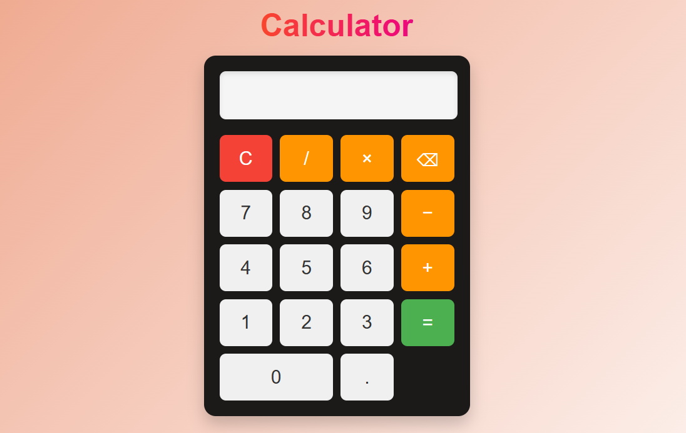

My Projects
Here are some of my Front-end development works using HTML, CSS and JavaScript and some Back-end development work using Java.

Myntra Clone (Frontend)
This is a responsive e-commerce website clone inspired by Myntra. It replicates the UI design, layout structure, and basic user interactions. Built using HTML, CSS, and JavaScript, this project focuses on frontend design accuracy, responsive layout, and clean UI structuring.

Calculator App
A simple and functional calculator built using JavaScript. It performs basic arithmetic operations such as addition, subtraction, multiplication, and division. The project demonstrates DOM manipulation, event handling, and logic building using JavaScript.
Calculator App
A simple and functional calculator built using JavaScript. It performs basic arithmetic operations such as addition, subtraction, multiplication, and division. The project demonstrates DOM manipulation, event handling, and logic building using JavaScript.